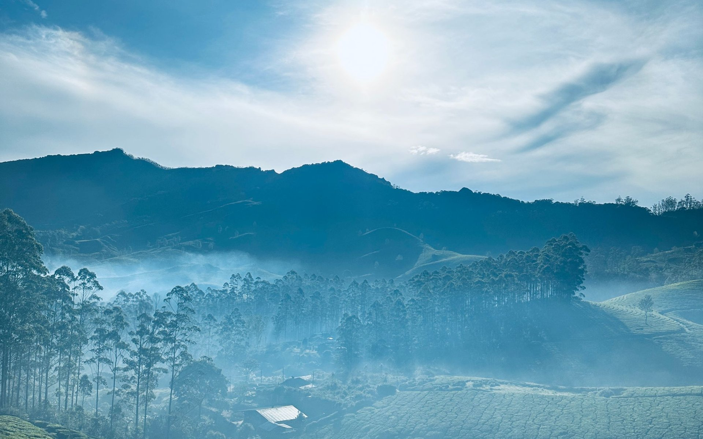
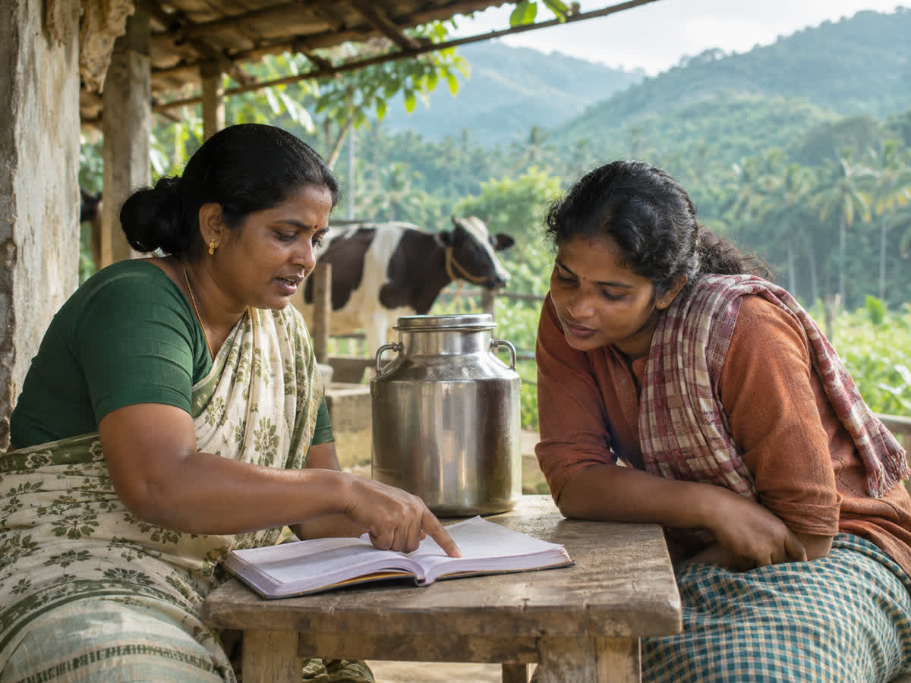
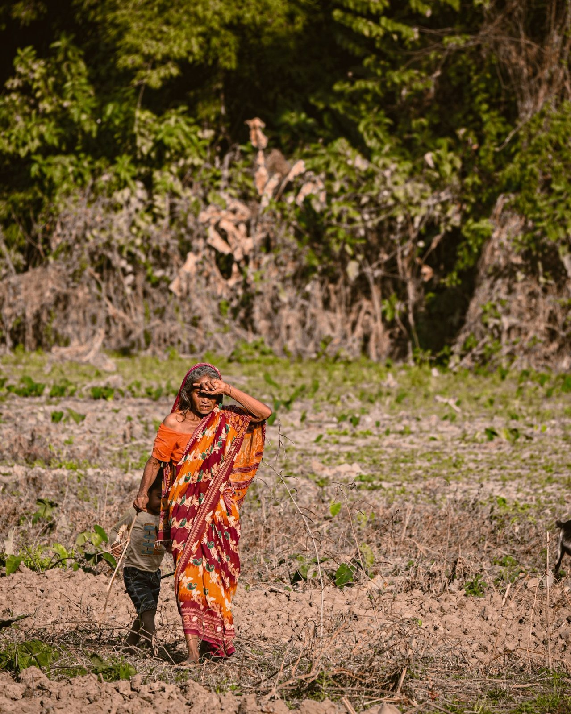
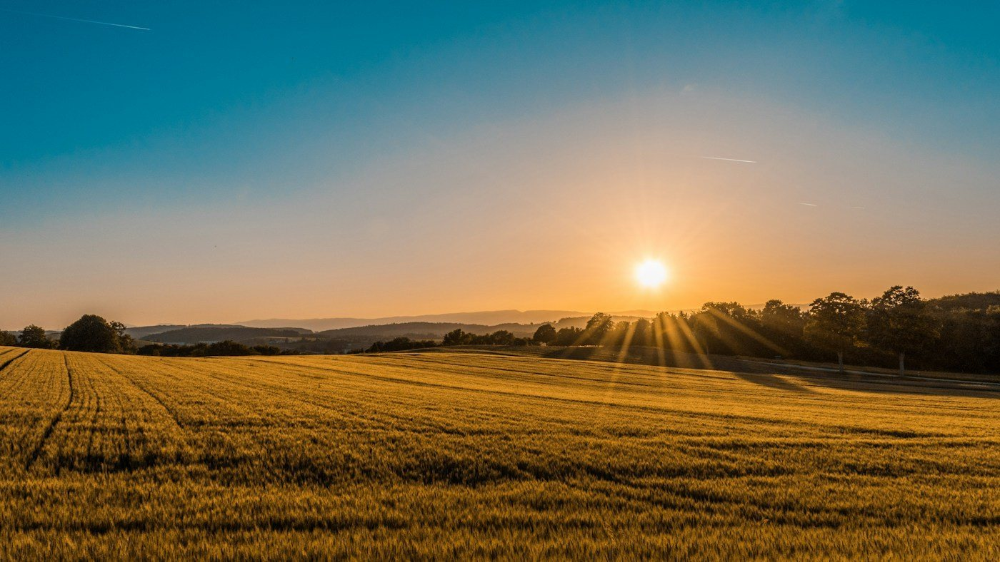
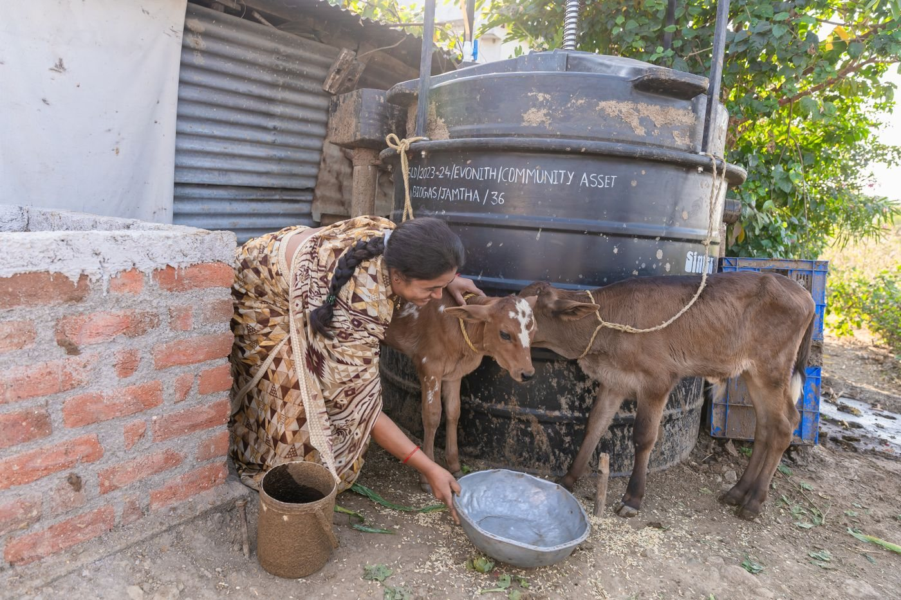
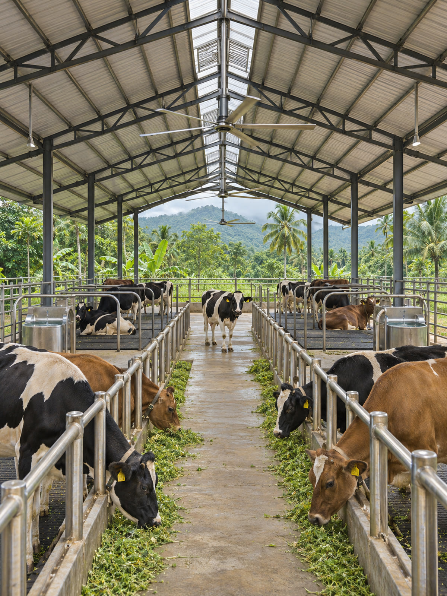
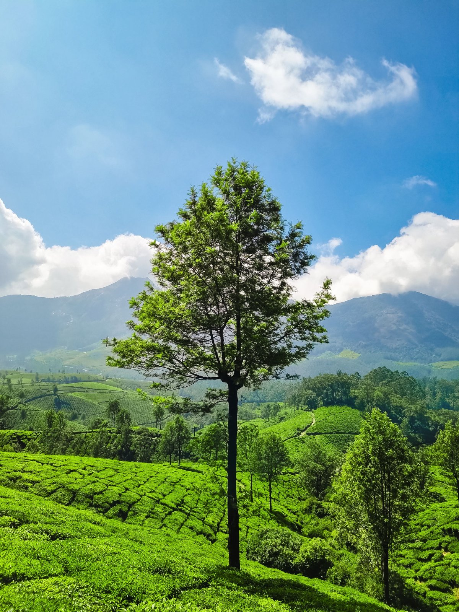
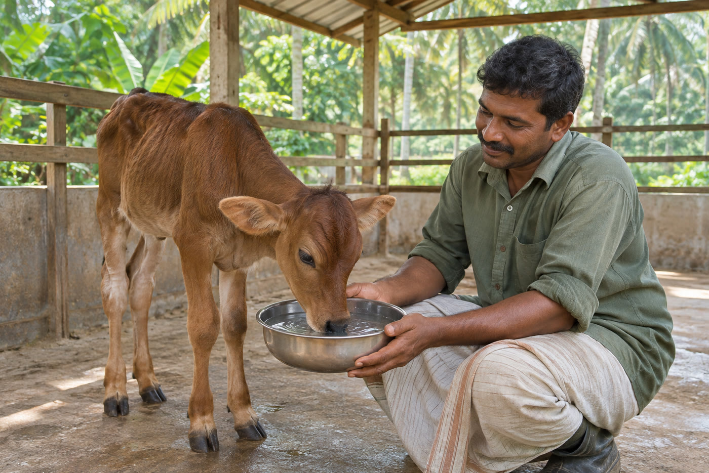

Rooted in co-operation
Advancing dairy development, supporting farming communities, and shaping a more sustainable future through collective progress.
Scroll to discoverKerala & Tamil Nadu, IndiaRooted in the land. Open to possibility.A co-operative perspective
Surabhi Multi State Co-operative Dairy Society Ltd.A shared purpose. A wider horizon.
01 / Who we are
One society.Many possibilities.

Surabhi Multi State Co-operative Dairy Society Ltd. is established around the principles of co-operation, dairy development, and the advancement of farming communities across Kerala and Tamil Nadu.
Bringing people, ideas, and opportunities together, with a belief that meaningful progress is always a shared endeavour.
The story behind SurabhiCO-OPERATION IS OUR FOUNDATION

Our core purpose
Our focus extends beyond dairy. It is about the lives connected to it: the farmers, their animals, the land, and the communities that grow around them.
01
Collective progress
Moving forward through participation and shared purpose.
02
Responsible development
Considering people, resources, and the long term.
03
Lasting impact
Building a foundation for the generations to come.
02 / What we do
06 connected areas
of shared ambition
of shared ambition
Choose a field. Explore the wider perspective.
Six fields. A shared direction.
Scroll to explore them all.

Dairy development
These are organizational objectives. Individual services and operational status are subject to confirmation.
Explore all our activities
Looking beyond today
The land connects us. Our purpose moves us forward.
03 / Our initiatives
Exploring opportunities across dairy, agriculture, animal welfare, and sustainable rural development.
All proposed initiatives
Biogas Development
Exploring responsible ways to turn agricultural and organic resources into renewable energy.
Explore the possibility
Farm Tourism
Envisioning experiences that connect people with rural traditions, agricultural landscapes, and farm life.

Veterinary Healthcare
Exploring accessible animal healthcare infrastructure and rural veterinary services.

Dairy Infrastructure
Supporting a long-term vision for milk collection, processing, and distribution infrastructure.
Conceptual project information presented for demonstration purposes. Details are subject to confirmation and applicable approvals.
04 / Animal wellbeing
From animal health to responsible breeding support, better livestock care is an important part of sustainable dairy development.
01Veterinary care objectives02Animal health awareness03Nutrition & breeding support04Modern livestock management
A closer look at care

Our shared responsibility.
Innovation & sustainability

01 / The land we shareA longer view. ↗
The future of farming asks us to think differently. To see resources as possibilities. And to make progress with care.
Resource-conscious development, modern dairy technologies, and responsible farming are part of our forward-looking perspective. Renewable energy remains a project concept to be explored with diligence.
Respect for resourcesAppropriate technologyCommunity at the centre
Explore the thinking
05 / Our journey
Every shared future begins with a first step.
Ours is a story still being written.
A horizon of possibilities.
2023Registration milestone
The beginning of a shared ambition.
Society registration dated 12 October 2023, as stated in the client brief.
Future directionOrganizational objective
Strengthening dairy development.
A focus on dairy-sector development, farmer welfare, and relevant modern technologies.
Proposed initiativesConceptual direction
Exploring new possibilities.
Ideas across renewable energy, rural tourism, and animal healthcare, subject to feasibility and approvals.
Long-term visionIllustrative future vision
Growing with responsibility.
A shared ambition for sustainable development and lasting opportunities for farming communities.
06 / Membership & co-operation
Many voices. One shared direction.Co-operation begins with participation. Learn about the society’s membership framework, official bye-laws, and the conversations that come before joining.
Ask about membershipEligibility and conditions are governed by the official registered bye-laws.07 / News & insights

Advancing Modern Dairy Practices
Thinking about the role of practical knowledge and appropriate technology in everyday dairy farming.
Demonstration article
The Importance of Animal Healthcare
Why animal welfare belongs at the heart of the conversation about dairy development.
Demonstration article
Exploring Sustainable Rural Development
Looking at the connections between local resources, new possibilities, and long-term community development.
Demonstration articleThere is more we can grow
People. Purpose. Possibility.Discover the possibilities of co-operation, innovation, and sustainable development.
Get in touchA shared ambition. A collective future.Let’s begin a conversation ↗